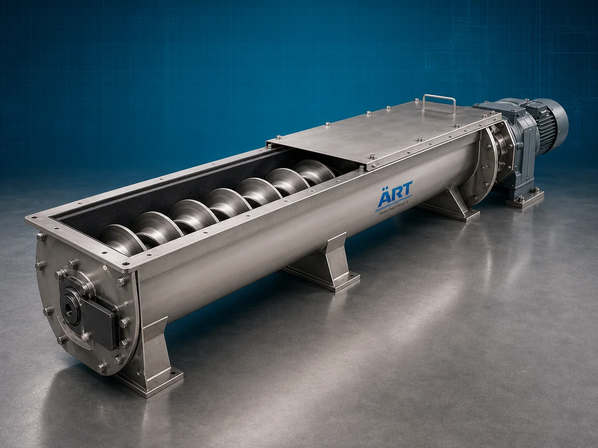

Shaftless Screw Conveyor Machine (Industrial Shaftless Auger & Sludge Conveying System)
A Shaftless Screw Conveyor Machine, also known as a Shaftless Auger Conveyor or Industrial Shaftless Spiral Conveyor, is a specialized industrial material handling equipment designed for conveying sticky, wet, fibrous, semi-solid, sludge-type, irregular, and difficult-to-handle materials using a shaftless spiral screw rotating inside a trough or tubular conveyor body.

About the Shaftless Screw Conveyor
Unlike conventional screw conveyors, shaftless screw conveyors do not have a central shaft, which allows:
- Better handling of sticky materials
- Reduced clogging and jamming
- Higher material carrying capacity
- Efficient sludge conveying
- Smooth transfer of fibrous materials
The machine is widely used in industries such as:
Wastewater treatment plants
Food processing industries
Chemical industries
Recycling plants
Sludge handling systems
Biomass industries
Paper and pulp industries
Municipal waste management plants
where continuous handling of difficult, sticky, wet, or fibrous materials is critical.
The conveyor operates using:
- Shaftless spiral screw
- Heavy-duty trough liner
- Motor-driven gear system
- Enclosed conveying structure
to transport materials horizontally or at inclined angles efficiently and continuously.
Shaftless screw conveyor machines are highly suitable for:
- Sludge conveying
- Sticky material handling
- Waste transportation
- Biomass conveying
- Fibrous material transfer
- Industrial waste handling
ART Mechatronics offers high-performance shaftless screw conveyor machines, engineered for heavy-duty industrial operation, clog-free conveying, low maintenance, and reliable long-term performance.
Working Principle of Shaftless Screw Conveyor Machine
Sticky, wet, sludge, fibrous, or waste materials are fed into conveyor inlet section
Motor rotates heavy-duty shaftless spiral screw inside conveyor trough
Spiral pushes material continuously along conveyor body
Machine conveys:
- Sludge
- Sticky powders
- Fibrous waste
- Biomass
- Food waste
- Industrial waste materials without central shaft obstruction.
Open center design minimizes: Material buildup Clogging Blockage issues
Conveyor body prevents: Leakage Odor spread Material spillage
Material discharged automatically at desired transfer point
Types of Shaftless Screw Conveyor Machines
- 1. Horizontal Shaftless Screw Conveyor
Used for: ✔ Horizontal sludge and waste transfer
- 2. Inclined Shaftless Screw Conveyor
Suitable for: ✔ Elevated sticky material transfer applications
- 3. Tubular Shaftless Screw Conveyor
Uses: ✔ Enclosed tubular design for odor-free and hygienic conveying.
- 4. Trough Type Shaftless Conveyor
Uses: ✔ Open trough structure for easy maintenance and cleaning.
- 5. Heavy Duty Sludge Conveyor
Designed for: ✔ Wastewater treatment and sludge handling systems
- 6. Industrial Biomass Conveyor
Suitable for: ✔ Biomass and fibrous material transportation
Industries Using Shaftless Screw Conveyor Machine
💧 Wastewater Treatment Industry Sludge conveying and handling ♻️ Recycling Industry Waste material transportation systems ⚗️ Chemical Industry Sticky chemical material conveying 🍃 Food Processing Industry Food waste and semi-solid transfer systems 🌱 Biomass Industry Biomass and organic waste handling 🪵 Paper & Pulp Industry Fibrous material conveying applications 🏗️ Municipal Waste Industry Industrial waste transportation systems
Features & Advantages
- Ideal for sticky and fibrous materials
- No central shaft for clog-free conveying
- Handles sludge and semi-solid materials efficiently
- Continuous industrial operation
- Heavy-duty industrial construction
- Reduced maintenance and downtime
- Dust-free enclosed conveying system
- Suitable for horizontal and inclined transfer
- Energy-efficient material handling solution
Technical Highlights
Conveyor Type: Shaftless spiral conveyor Horizontal conveyor Inclined conveyor Construction: Stainless Steel / Mild Steel Spiral Design: Heavy-duty shaftless spiral screw Trough Design: U-trough Tubular body Drive System: Geared motor drive Variable frequency drive (VFD) Automation: Semi-automatic Fully automatic PLC-based systems
Turnkey Shaftless Conveying Solutions
ART Mechatronics offers: Complete shaftless conveying systems Sludge handling system integration Waste processing plant automation Material transfer and feeding solutions Installation & commissioning After-sales service & AMC
Why Choose Art Mechatronics
Expertise in industrial waste and sludge handling systems Customized conveyor solutions for difficult materials High-performance and durable industrial construction Energy-efficient and reliable conveying systems Proven industrial performance across sectors
Applications
Wastewater Treatment Plants Recycling Facilities Food Processing Plants Chemical Industries Biomass Processing Plants Municipal Waste Handling Systems
Related Conveying & Handling machines
Get pricing & specs for the Shaftless Screw Conveyor
Share the product, target capacity, current process and plant location. These details help our engineers discuss the right machine or line configuration.
One partner, from design to start-up
ART Mechatronics designs, manufactures, installs and commissions your Shaftless Screw Conveyor solution with regional presence in India, UAE and Thailand.